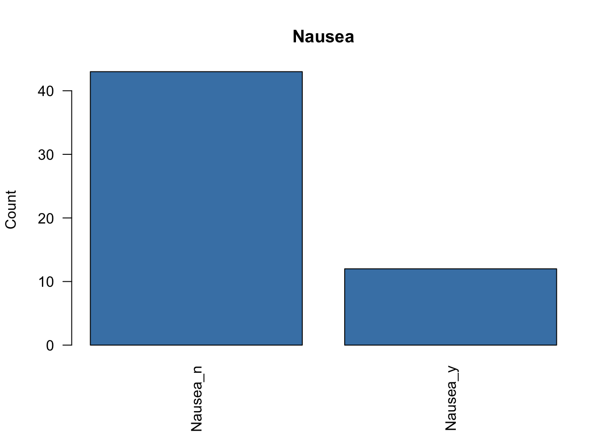
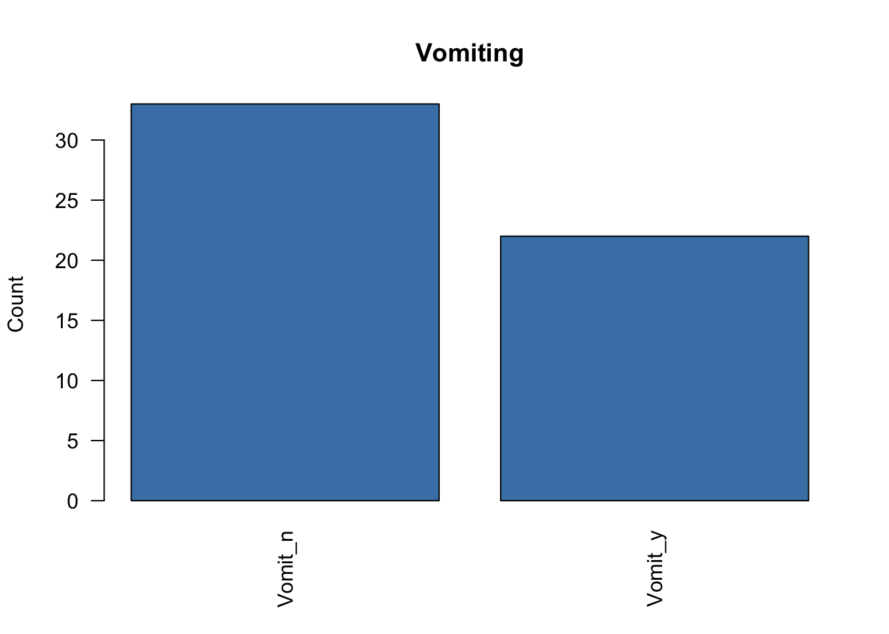
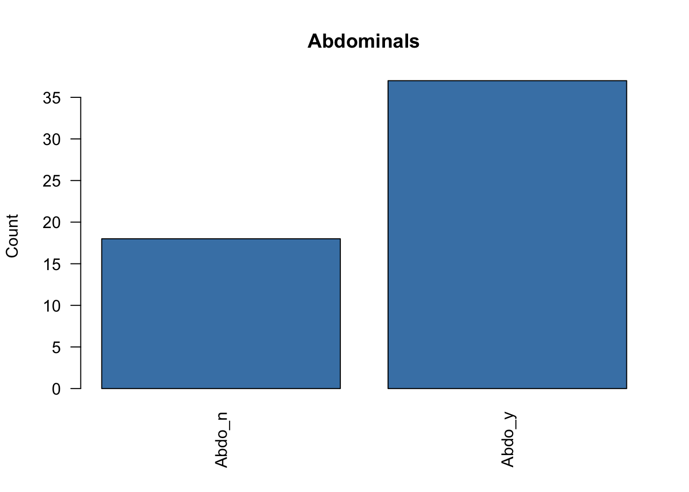
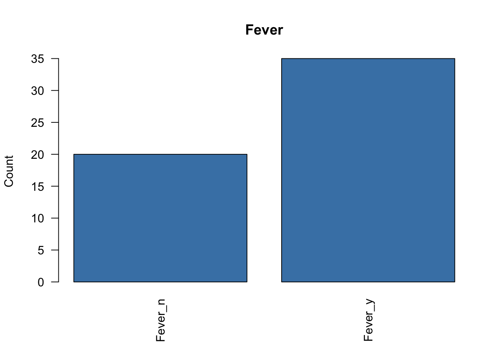

### Object: Performing Multiple Correspondance Analysis in R
### Source: Practical Guide to Principal Component Methods
### (Chapter 5 Code)
# Load Packages
library("FactoMineR") # for analysis
library("factoextra") # for visualizarion1
# library("httpg")
# Data Prep ---------------------------------------------------------------
data("poison")
head(poison[, 1:7], 3) # survey style data Age Time Sick Sex Nausea Vomiting Abdominals
1 9 22 Sick_y F Nausea_y Vomit_n Abdo_y
2 5 0 Sick_n F Nausea_n Vomit_n Abdo_n
3 6 16 Sick_y F Nausea_n Vomit_y Abdo_y# Subset active individuals and variables
poison.active <- poison[1:55, 5:15]
head(poison.active[, 1:6], 3) Nausea Vomiting Abdominals Fever Diarrhae Potato
1 Nausea_y Vomit_n Abdo_y Fever_y Diarrhea_y Potato_y
2 Nausea_n Vomit_n Abdo_n Fever_n Diarrhea_n Potato_y
3 Nausea_n Vomit_y Abdo_y Fever_y Diarrhea_y Potato_y# Summaries
str(poison.active)'data.frame': 55 obs. of 11 variables:
$ Nausea : Factor w/ 2 levels "Nausea_n","Nausea_y": 2 1 1 1 1 1 1 2 2 1 ...
$ Vomiting : Factor w/ 2 levels "Vomit_n","Vomit_y": 1 1 2 1 2 1 2 2 1 2 ...
$ Abdominals: Factor w/ 2 levels "Abdo_n","Abdo_y": 2 1 2 1 2 2 2 2 2 1 ...
$ Fever : Factor w/ 2 levels "Fever_n","Fever_y": 2 1 2 1 2 2 2 2 2 2 ...
$ Diarrhae : Factor w/ 2 levels "Diarrhea_n","Diarrhea_y": 2 1 2 1 2 2 2 2 2 2 ...
$ Potato : Factor w/ 2 levels "Potato_n","Potato_y": 2 2 2 2 2 2 2 2 2 2 ...
$ Fish : Factor w/ 2 levels "Fish_n","Fish_y": 2 2 2 2 2 1 2 2 2 2 ...
$ Mayo : Factor w/ 2 levels "Mayo_n","Mayo_y": 2 2 2 1 2 2 2 2 2 2 ...
$ Courgette : Factor w/ 2 levels "Courg_n","Courg_y": 2 2 2 2 2 2 2 2 2 2 ...
$ Cheese : Factor w/ 2 levels "Cheese_n","Cheese_y": 2 1 2 2 2 2 2 2 2 2 ...
$ Icecream : Factor w/ 2 levels "Icecream_n","Icecream_y": 2 2 2 2 2 2 2 2 2 2 ... for (i in 1:4) {
plot(poison.active[,i], main=colnames(poison.active)[i],
ylab = "Count", col="steelblue", las = 2)
}



# The analysis ------------------------------------------------------------
res.mca <- FactoMineR::MCA(X = poison.active,
ncp = 5,
graph = TRUE)
# Visualization -----------------------------------------------------------
# Eigenvalues / Variances
eig.val <- get_eigenvalue(res.mca)
eig.val # proportion of variances retained by dimensions eigenvalue variance.percent cumulative.variance.percent
Dim.1 0.33523140 33.523140 33.52314
Dim.2 0.12913979 12.913979 46.43712
Dim.3 0.10734849 10.734849 57.17197
Dim.4 0.09587950 9.587950 66.75992
Dim.5 0.07883277 7.883277 74.64319
Dim.6 0.07108981 7.108981 81.75217
Dim.7 0.06016580 6.016580 87.76876
Dim.8 0.05577301 5.577301 93.34606
Dim.9 0.04120578 4.120578 97.46663
Dim.10 0.01304158 1.304158 98.77079
Dim.11 0.01229208 1.229208 100.00000 # Percentages of Inertia explained by MCA
fviz_screeplot(res.mca, addlabels = TRUE, ylim = c(0,45))
# Biplot
fviz_mca_biplot(res.mca,
repel = TRUE, # avoid text overlapping
ggtheme = theme_minimal())
# Rows (individuals) are represented by blue points;
# Columns (variable categories) by red triangles.
# Graph of variables
var <- get_mca_var(res.mca)
varMultiple Correspondence Analysis Results for variables
===================================================
Name Description
1 "$coord" "Coordinates for categories"
2 "$cos2" "Cos2 for categories"
3 "$contrib" "contributions of categories" # Coordinates
head(var$coord) Dim 1 Dim 2 Dim 3 Dim 4 Dim 5
Nausea_n 0.2673909 0.12139029 -0.265583253 0.03376130 0.07370500
Nausea_y -0.9581506 -0.43498187 0.951673323 -0.12097801 -0.26410958
Vomit_n 0.4790279 -0.40919465 0.084492799 0.27361142 0.05245250
Vomit_y -0.7185419 0.61379197 -0.126739198 -0.41041713 -0.07867876
Abdo_n 1.3180221 -0.03574501 -0.005094243 -0.15360951 -0.06986987
Abdo_y -0.6411999 0.01738946 0.002478280 0.07472895 0.03399075 # Cos2: quality on the factore map
head(var$cos2) Dim 1 Dim 2 Dim 3 Dim 4 Dim 5
Nausea_n 0.2562007 0.0528025759 2.527485e-01 0.004084375 0.019466197
Nausea_y 0.2562007 0.0528025759 2.527485e-01 0.004084375 0.019466197
Vomit_n 0.3442016 0.2511603912 1.070855e-02 0.112294813 0.004126898
Vomit_y 0.3442016 0.2511603912 1.070855e-02 0.112294813 0.004126898
Abdo_n 0.8451157 0.0006215864 1.262496e-05 0.011479077 0.002374929
Abdo_y 0.8451157 0.0006215864 1.262496e-05 0.011479077 0.002374929 # Contributions to the principal components
head(var$contrib) Dim 1 Dim 2 Dim 3 Dim 4 Dim 5
Nausea_n 1.515869 0.81100008 4.670018e+00 0.08449397 0.48977906
Nausea_y 5.431862 2.90608363 1.673423e+01 0.30277007 1.75504164
Vomit_n 3.733667 7.07226253 3.627455e-01 4.25893721 0.19036376
Vomit_y 5.600500 10.60839380 5.441183e-01 6.38840581 0.28554563
Abdo_n 15.417637 0.02943661 7.192511e-04 0.73219636 0.18424268
Abdo_y 7.500472 0.01432051 3.499060e-04 0.35620363 0.08963157 # Graph of individuals
ind <- get_mca_ind(res.mca) # extract the results for individuals
indMultiple Correspondence Analysis Results for individuals
===================================================
Name Description
1 "$coord" "Coordinates for the individuals"
2 "$cos2" "Cos2 for the individuals"
3 "$contrib" "contributions of the individuals" # Coordinates of column points
head(ind$coord) Dim 1 Dim 2 Dim 3 Dim 4 Dim 5
1 -0.4525811 -0.26415072 0.17151614 0.01369348 -0.11696806
2 0.8361700 -0.03193457 -0.07208249 -0.08550351 0.51978710
3 -0.4481892 0.13538726 -0.22484048 -0.14170168 -0.05004753
4 0.8803694 -0.08536230 -0.02052044 -0.07275873 -0.22935022
5 -0.4481892 0.13538726 -0.22484048 -0.14170168 -0.05004753
6 -0.3594324 -0.43604390 -1.20932223 1.72464616 0.04348157 # Quality of representation
head(ind$cos2) Dim 1 Dim 2 Dim 3 Dim 4 Dim 5
1 0.34652591 0.1180447167 0.0497683175 0.0003172275 0.0231460846
2 0.55589562 0.0008108236 0.0041310808 0.0058126211 0.2148103098
3 0.54813888 0.0500176790 0.1379484860 0.0547920948 0.0068349171
4 0.74773962 0.0070299584 0.0004062504 0.0051072923 0.0507479873
5 0.54813888 0.0500176790 0.1379484860 0.0547920948 0.0068349171
6 0.02485357 0.0365775483 0.2813443706 0.5722083217 0.0003637178 # Contributions
head(ind$contrib) Dim 1 Dim 2 Dim 3 Dim 4 Dim 5
1 1.110927 0.98238297 0.498254685 0.003555817 0.31554778
2 3.792117 0.01435818 0.088003703 0.138637089 6.23134138
3 1.089470 0.25806722 0.856229950 0.380768961 0.05776914
4 4.203611 0.10259105 0.007132055 0.100387990 1.21319013
5 1.089470 0.25806722 0.856229950 0.380768961 0.05776914
6 0.700692 2.67693398 24.769968729 56.404214518 0.04360547 # BIplot for individuals only (no vars)
fviz_mca_ind(res.mca, col.ind = "cos2",
gradient.cols = c("#00AFBB", "#E7B800", "#FC4E07"),
repel = TRUE, ggtheme = theme_minimal())
fviz_mca_ind(res.mca,
label = "none",
habillage = "Vomiting", # color by groups defined by variable
palette = c("#00AFBB", "#E7B800"),
addEllipses = TRUE, ellipse.type = "confidence",
repel = TRUE, ggtheme = theme_minimal())
# More than 1 grouping variable
fviz_ellipses(res.mca, c("Vomiting", "Fever"),
geom = "point")
# Bar plot for Cos2 of individuals
fviz_cos2(res.mca, choice = "ind", axes = 1:2, top = 20)
# Contribution of individuals to the dimensions
fviz_contrib(res.mca, choice = "ind", axes = 1:2, top = 20)
# Supplementary elements --------------------------------------------------
# res.mca <- MCA(poison,
# ind.sup = 53:55)
# ind <- get_mca_ind(res.mca)
# ind$coord
# res.mca$ind.sup # Supplementary individuals
# Doing it by hand --------------------------------------------------------
# Data
data(wine)
MCA.dt <- wine[, sapply(wine, is.factor)]
sapply(MCA.dt, nlevels)Label Soil
3 4 # Goal: Find the coordinates of
npcs <- 4
res.mca <- FactoMineR::MCA(X = MCA.dt, ncp = npcs, graph = FALSE)
res.mca$ind$coord # Coordinates of the individuals on the dimensions Dim 1 Dim 2 Dim 3 Dim 4
2EL -0.08524441 -0.36629820 8.660254e-01 -0.42338794
1CHA -0.08524441 -0.36629820 8.660254e-01 -0.42338794
1FON -1.13625682 0.13134188 8.660254e-01 0.07425214
1VAU 1.19013068 1.42046767 2.646476e-16 0.44277818
1DAM -0.08524441 -0.36629820 -8.660254e-01 -0.42338794
2BOU -1.13625682 0.13134188 -8.660254e-01 0.07425214
1BOI -1.13625682 0.13134188 -8.660254e-01 0.07425214
3EL -0.08524441 -0.36629820 8.660254e-01 -0.42338794
DOM1 0.08871159 0.96016779 8.660254e-01 0.90307806
1TUR 1.01617468 0.09400168 1.274326e-15 -0.88368782
4EL 1.01617468 0.09400168 1.274326e-15 -0.88368782
PER1 1.01617468 0.09400168 1.274326e-15 -0.88368782
2DAM -0.08524441 -0.36629820 -8.660254e-01 -0.42338794
1POY -0.08524441 -0.36629820 -8.660254e-01 -0.42338794
1ING -1.13625682 0.13134188 8.660254e-01 0.07425214
1BEN -1.13625682 0.13134188 -8.660254e-01 0.07425214
2BEA 0.08871159 0.96016779 -8.660254e-01 0.90307806
1ROC 1.19013068 1.42046767 3.995551e-16 0.44277818
2ING -1.13625682 0.13134188 8.660254e-01 0.07425214
T1 0.86139937 -1.81676901 -3.719373e-16 1.02708287
T2 0.86139937 -1.81676901 -3.719373e-16 1.02708287 res.mca$svd$V [,1] [,2] [,3] [,4]
[1,] 0.5343096 -0.78968614 -4.844048e-15 -0.78968614
[2,] -1.5677152 0.20559402 -3.260525e-15 0.20559402
[3,] 0.8822216 1.86324585 -6.725946e-15 1.86324585
[4,] -0.7047984 0.05708973 -1.732051e+00 -0.05708973
[5,] -0.7047984 0.05708973 1.732051e+00 -0.05708973
[6,] 1.4980398 0.97768949 6.898331e-15 -0.97768949
[7,] 1.1884892 -2.84385187 3.204282e-15 2.84385187# Following AudigierEtAl2016_MICAT ----------------------------------------
I <- nrow(MCA.dt) # numebr of individuals
K <- ncol(MCA.dt) # number of categorical predictors
qk <- sapply(MCA.dt, # number of levels per categorical variable
nlevels)
J <- sum(qk) # total number of categories
# Disjunctive table
Z <- tab.disjonctif(MCA.dt)
# Notice the relationship between the disjunctive table and a
# contingency table
N <- t(Z[, 1:3]) %*% Z[, 4:7]
N - table(MCA.dt) Reference Env1 Env2 Env4
Saumur 0 0 0 0
Bourgueuil 0 0 0 0
Chinon 0 0 0 0 # Distance Metric Matrix
pxkqk <- colSums(Z)/I # props ids taking category value on variable
D_Sigma <- diag(pxkqk)
# Weight Matrix
W_mat <- diag(rep(1, I))/I
# M matrix (center matrix)
M <- matrix((rep(colMeans(Z), nrow(Z))),
nrow = nrow(Z),
byrow = TRUE)
# SVD of triplet (Z-M, D_Sigma, W_mat)
SVD.trip <- svd.triplet(X = Z - M,
row.w = diag(W_mat),
col.w = diag(1/K*solve(D_Sigma)),
ncp = npcs)
# Manual SVD triplet
SVD.man <- svd(sqrt(W_mat) %*% (Z - M) %*% sqrt(1/K*solve(D_Sigma)))
# Convert back to correct scales (according to Chaven 2017 p. 3)
V.man <- (solve(sqrt(1/K*solve(D_Sigma))) %*% SVD.man$v)[, 1:npcs]
U.man <- (solve(sqrt(W_mat)) %*% SVD.man$u)[, 1:npcs]
L.man <- SVD.man$d[1:npcs]
# Compare SVD triplet and manual SVD of weighted matrix
round(abs(SVD.trip$V) - abs(V.man), 5) [,1] [,2] [,3] [,4]
[1,] 0 0 0 0
[2,] 0 0 0 0
[3,] 0 0 0 0
[4,] 0 0 0 0
[5,] 0 0 0 0
[6,] 0 0 0 0
[7,] 0 0 0 0 round(abs(SVD.trip$U) - abs(U.man), 5) [,1] [,2] [,3] [,4]
[1,] 0 0 0 0
[2,] 0 0 0 0
[3,] 0 0 0 0
[4,] 0 0 0 0
[5,] 0 0 0 0
[6,] 0 0 0 0
[7,] 0 0 0 0
[8,] 0 0 0 0
[9,] 0 0 0 0
[10,] 0 0 0 0
[11,] 0 0 0 0
[12,] 0 0 0 0
[13,] 0 0 0 0
[14,] 0 0 0 0
[15,] 0 0 0 0
[16,] 0 0 0 0
[17,] 0 0 0 0
[18,] 0 0 0 0
[19,] 0 0 0 0
[20,] 0 0 0 0
[21,] 0 0 0 0 round(abs(SVD.trip$vs[1:npcs]) - abs(L.man), 5)[1] 0 0 0 0 # Reconstruction Formula
d_hat <- SVD.trip$vs[1:npcs] # matrix of the singular values
# (Squared would be eigenvalues of Z)
u_hat <- SVD.trip$U # Left singular vectors matrix
v_hat <- SVD.trip$V # Right singular vectors matrix
z_hat <- u_hat %*% diag(d_hat) %*% t(v_hat) + M
colSums(z_hat)[1] 11 6 4 7 7 5 2 colSums(Z) Saumur Bourgueuil Chinon Reference Env1 Env2 Env4
11 6 4 7 7 5 2 # Compare SVD matrices
# Matrix of singular values
res.mca$svd$vs[1:npcs] -
d_hat[1:npcs][1] 0.000000e+00 0.000000e+00 1.110223e-16 2.220446e-16 res.mca$svd$vs[1:npcs] -
L.man[1] 0.000000e+00 0.000000e+00 2.220446e-16 6.661338e-16 # Left Singular Vectors Matrix
round(
res.mca$svd$U - u_hat,
3
) [,1] [,2] [,3] [,4]
[1,] 0 0 2.449 0
[2,] 0 0 2.449 0
[3,] 0 0 2.449 0
[4,] 0 0 0.000 0
[5,] 0 0 -2.449 0
[6,] 0 0 -2.449 0
[7,] 0 0 -2.449 0
[8,] 0 0 2.449 0
[9,] 0 0 2.449 0
[10,] 0 0 0.000 0
[11,] 0 0 0.000 0
[12,] 0 0 0.000 0
[13,] 0 0 -2.449 0
[14,] 0 0 -2.449 0
[15,] 0 0 2.449 0
[16,] 0 0 -2.449 0
[17,] 0 0 -2.449 0
[18,] 0 0 0.000 0
[19,] 0 0 2.449 0
[20,] 0 0 0.000 0
[21,] 0 0 0.000 0 round(
res.mca$svd$U - U.man,
3
) [,1] [,2] [,3] [,4]
[1,] -0.200 -0.917 2.449 0
[2,] -0.200 -0.917 2.449 0
[3,] -2.669 0.329 2.449 0
[4,] 2.796 3.554 0.000 0
[5,] -0.200 -0.917 -2.449 0
[6,] -2.669 0.329 -2.449 0
[7,] -2.669 0.329 -2.449 0
[8,] -0.200 -0.917 2.449 0
[9,] 0.208 2.403 2.449 0
[10,] 2.387 0.235 0.000 0
[11,] 2.387 0.235 0.000 0
[12,] 2.387 0.235 0.000 0
[13,] -0.200 -0.917 -2.449 0
[14,] -0.200 -0.917 -2.449 0
[15,] -2.669 0.329 2.449 0
[16,] -2.669 0.329 -2.449 0
[17,] 0.208 2.403 -2.449 0
[18,] 2.796 3.554 0.000 0
[19,] -2.669 0.329 2.449 0
[20,] 2.024 -4.546 0.000 0
[21,] 2.024 -4.546 0.000 0 # Right Singular Vectors Matrix
round(
res.mca$svd$V -
v_hat,
3) [,1] [,2] [,3] [,4]
[1,] 0.254 -0.376 0.000 -0.376
[2,] -1.120 0.147 0.000 0.147
[3,] 0.714 1.508 0.000 1.508
[4,] -0.470 0.038 -2.309 -0.038
[5,] -0.470 0.038 2.309 -0.038
[6,] 1.141 0.745 0.000 -0.745
[7,] 1.075 -2.573 0.000 2.573 # Correlation between columns
# And look into the PCAmixdata package
round(cor(v_hat, res.mca$svd$V), 1) [,1] [,2] [,3] [,4]
[1,] 0.9 0.0 0 0.0
[2,] 0.0 0.8 0 0.0
[3,] 0.0 0.0 -1 0.0
[4,] 0.0 0.0 0 0.9 # Coordinates on Dimensions are recovered
round(
res.mca$ind$coord -
u_hat %*% diag(d_hat),
3
) Dim 1 Dim 2 Dim 3 Dim 4
2EL 0 0 1.732 0
1CHA 0 0 1.732 0
1FON 0 0 1.732 0
1VAU 0 0 0.000 0
1DAM 0 0 -1.732 0
2BOU 0 0 -1.732 0
1BOI 0 0 -1.732 0
3EL 0 0 1.732 0
DOM1 0 0 1.732 0
1TUR 0 0 0.000 0
4EL 0 0 0.000 0
PER1 0 0 0.000 0
2DAM 0 0 -1.732 0
1POY 0 0 -1.732 0
1ING 0 0 1.732 0
1BEN 0 0 -1.732 0
2BEA 0 0 -1.732 0
1ROC 0 0 0.000 0
2ING 0 0 1.732 0
T1 0 0 0.000 0
T2 0 0 0.000 0# Following JosseHusson2016 -----------------------------------------------
I <- nrow(MCA.dt)
J <- ncol(MCA.dt)
X <- tab.disjonctif(MCA.dt)
rowMarg <- rowSums(X) # = J
colMarg <- colSums(X) # = number of ids in a category
D_Sigma <- diag(colMarg)
D <- 1/I * diag(rep(1, I)) # rowMasses
SVD.trip <- svd.triplet(X = diag(rep(1, I)) %*% X %*% solve(D_Sigma),
row.w = diag( D ),
col.w = diag( 1/(I*J)*D_Sigma ),
ncp=2
)
svd(I * X %*% solve(D_Sigma))$d
[1] 1.514660e+01 1.236990e+01 1.054821e+01 7.978230e+00 7.937254e+00
[6] 6.179826e+00 9.636589e-16
$u
[,1] [,2] [,3] [,4] [,5] [,6]
[1,] 0.032591337 -0.07625736 0.13536164 0.10431026 -2.672612e-01 -0.33476464
[2,] 0.032591337 -0.07625736 0.13536164 0.10431026 -2.672612e-01 -0.33476464
[3,] 0.007760225 -0.10152263 0.35440169 0.02151024 -2.672612e-01 0.17388603
[4,] 0.020375871 -0.49923872 -0.22465765 -0.05818667 8.885241e-17 0.17269077
[5,] 0.032591337 -0.07625736 0.13536164 0.10431026 2.672612e-01 -0.33476464
[6,] 0.007760225 -0.10152263 0.35440169 0.02151024 2.672612e-01 0.17388603
[7,] 0.007760225 -0.10152263 0.35440169 0.02151024 2.672612e-01 0.17388603
[8,] 0.032591337 -0.07625736 0.13536164 0.10431026 -2.672612e-01 -0.33476464
[9,] 0.013386482 -0.36360489 0.01780574 -0.40099813 -2.672612e-01 -0.19957224
[10,] 0.039580726 -0.21189120 -0.10710176 0.44712172 -1.379817e-16 0.03749837
[11,] 0.039580726 -0.21189120 -0.10710176 0.44712172 -1.379817e-16 0.03749837
[12,] 0.039580726 -0.21189120 -0.10710176 0.44712172 -1.379817e-16 0.03749837
[13,] 0.032591337 -0.07625736 0.13536164 0.10431026 2.672612e-01 -0.33476464
[14,] 0.032591337 -0.07625736 0.13536164 0.10431026 2.672612e-01 -0.33476464
[15,] 0.007760225 -0.10152263 0.35440169 0.02151024 -2.672612e-01 0.17388603
[16,] 0.007760225 -0.10152263 0.35440169 0.02151024 2.672612e-01 0.17388603
[17,] 0.013386482 -0.36360489 0.01780574 -0.40099813 2.672612e-01 -0.19957224
[18,] 0.020375871 -0.49923872 -0.22465765 -0.05818667 1.352292e-16 0.17269077
[19,] 0.007760225 -0.10152263 0.35440169 0.02151024 -2.672612e-01 0.17388603
[20,] 0.702629651 0.05328487 -0.01535314 -0.04368183 3.942058e-17 0.03644825
[21,] 0.702629651 0.05328487 -0.01535314 -0.04368183 3.942058e-17 0.03644825
[,7]
[1,] 4.208432e-01
[2,] 4.991001e-01
[3,] -3.618114e-02
[4,] -1.518978e-01
[5,] -2.291723e-01
[6,] 4.197641e-01
[7,] 4.193287e-03
[8,] -3.900336e-01
[9,] -1.017590e-01
[10,] -2.744259e-02
[11,] -2.744259e-02
[12,] -2.744259e-02
[13,] -1.092048e-01
[14,] -1.092048e-01
[15,] -1.959848e-01
[16,] 4.193287e-03
[17,] 1.943126e-02
[18,] 2.342255e-01
[19,] -1.959848e-01
[20,] -2.270596e-17
[21,] -2.270596e-17
$v
[,1] [,2] [,3] [,4] [,5] [,6]
[1,] 0.21673353 -0.15227297 0.08328278 0.449827802 0.000000e+00 -0.56322741
[2,] 0.01075916 -0.17235191 0.70556405 0.056618453 -5.143453e-16 0.59089151
[3,] 0.02340490 -0.73241180 -0.20590657 -0.604324602 7.308978e-16 -0.04567368
[4,] 0.02662799 -0.21753089 0.42294271 -0.008850321 7.071068e-01 -0.33117829
[5,] 0.02662799 -0.21753089 0.42294271 -0.008850321 -7.071068e-01 -0.33117829
[6,] 0.04422606 -0.55484980 -0.30683950 0.644875605 2.730638e-17 0.31118708
[7,] 0.97416066 0.09046012 -0.03056595 -0.114977701 -1.236662e-16 0.12385678
[,7]
[1,] -0.6350853
[2,] -0.3464102
[3,] -0.2309401
[4,] 0.4041452
[5,] 0.4041452
[6,] 0.2886751
[7,] 0.1154701 SVD.trip$vs[1] 4.761905e-02 4.054015e-02 3.806073e-02 3.367175e-02 2.861739e-02
[6] 2.498139e-02 6.677878e-18 round(SVD.trip$vs[2:3] - res.mca$svd$vs[1:2], 3)[1] -0.811 -0.761 SVD.trip$U [,1] [,2]
[1,] 1 -0.1001293
[2,] 1 -0.1001293
[3,] 1 -1.3346637
[4,] 1 1.3979447
[5,] 1 -0.1001293
[6,] 1 -1.3346637
[7,] 1 -1.3346637
[8,] 1 -0.1001293
[9,] 1 0.1042019
[10,] 1 1.1936135
[11,] 1 1.1936135
[12,] 1 1.1936135
[13,] 1 -0.1001293
[14,] 1 -0.1001293
[15,] 1 -1.3346637
[16,] 1 -1.3346637
[17,] 1 0.1042019
[18,] 1 1.3979447
[19,] 1 -1.3346637
[20,] 1 1.0118122
[21,] 1 1.0118122 res.mca$svd$U [,1] [,2] [,3] [,4]
[1,] -0.1001293 -0.4582879 1.224745e+00 -0.7045133
[2,] -0.1001293 -0.4582879 1.224745e+00 -0.7045133
[3,] -1.3346637 0.1643262 1.224745e+00 0.1235548
[4,] 1.3979447 1.7771946 3.742682e-16 0.7367785
[5,] -0.1001293 -0.4582879 -1.224745e+00 -0.7045133
[6,] -1.3346637 0.1643262 -1.224745e+00 0.1235548
[7,] -1.3346637 0.1643262 -1.224745e+00 0.1235548
[8,] -0.1001293 -0.4582879 1.224745e+00 -0.7045133
[9,] 0.1042019 1.2012980 1.224745e+00 1.5027130
[10,] 1.1936135 0.1176086 1.802169e-15 -1.4704478
[11,] 1.1936135 0.1176086 1.802169e-15 -1.4704478
[12,] 1.1936135 0.1176086 1.802169e-15 -1.4704478
[13,] -0.1001293 -0.4582879 -1.224745e+00 -0.7045133
[14,] -0.1001293 -0.4582879 -1.224745e+00 -0.7045133
[15,] -1.3346637 0.1643262 1.224745e+00 0.1235548
[16,] -1.3346637 0.1643262 -1.224745e+00 0.1235548
[17,] 0.1042019 1.2012980 -1.224745e+00 1.5027130
[18,] 1.3979447 1.7771946 5.650563e-16 0.7367785
[19,] -1.3346637 0.1643262 1.224745e+00 0.1235548
[20,] 1.0118122 -2.2730204 -5.259988e-16 1.7090557
[21,] 1.0118122 -2.2730204 -5.259988e-16 1.7090557# round(SVD.trip$U[, 2:3] - res.mca$svd$U, 3)
res.mca$svd$U [,1] [,2] [,3] [,4]
[1,] -0.1001293 -0.4582879 1.224745e+00 -0.7045133
[2,] -0.1001293 -0.4582879 1.224745e+00 -0.7045133
[3,] -1.3346637 0.1643262 1.224745e+00 0.1235548
[4,] 1.3979447 1.7771946 3.742682e-16 0.7367785
[5,] -0.1001293 -0.4582879 -1.224745e+00 -0.7045133
[6,] -1.3346637 0.1643262 -1.224745e+00 0.1235548
[7,] -1.3346637 0.1643262 -1.224745e+00 0.1235548
[8,] -0.1001293 -0.4582879 1.224745e+00 -0.7045133
[9,] 0.1042019 1.2012980 1.224745e+00 1.5027130
[10,] 1.1936135 0.1176086 1.802169e-15 -1.4704478
[11,] 1.1936135 0.1176086 1.802169e-15 -1.4704478
[12,] 1.1936135 0.1176086 1.802169e-15 -1.4704478
[13,] -0.1001293 -0.4582879 -1.224745e+00 -0.7045133
[14,] -0.1001293 -0.4582879 -1.224745e+00 -0.7045133
[15,] -1.3346637 0.1643262 1.224745e+00 0.1235548
[16,] -1.3346637 0.1643262 -1.224745e+00 0.1235548
[17,] 0.1042019 1.2012980 -1.224745e+00 1.5027130
[18,] 1.3979447 1.7771946 5.650563e-16 0.7367785
[19,] -1.3346637 0.1643262 1.224745e+00 0.1235548
[20,] 1.0118122 -2.2730204 -5.259988e-16 1.7090557
[21,] 1.0118122 -2.2730204 -5.259988e-16 1.7090557# SVD.trip$V
# round(SVD.trip$V[, 2:3] - res.mca$svd$V, 3)
# res.mca$svd$V